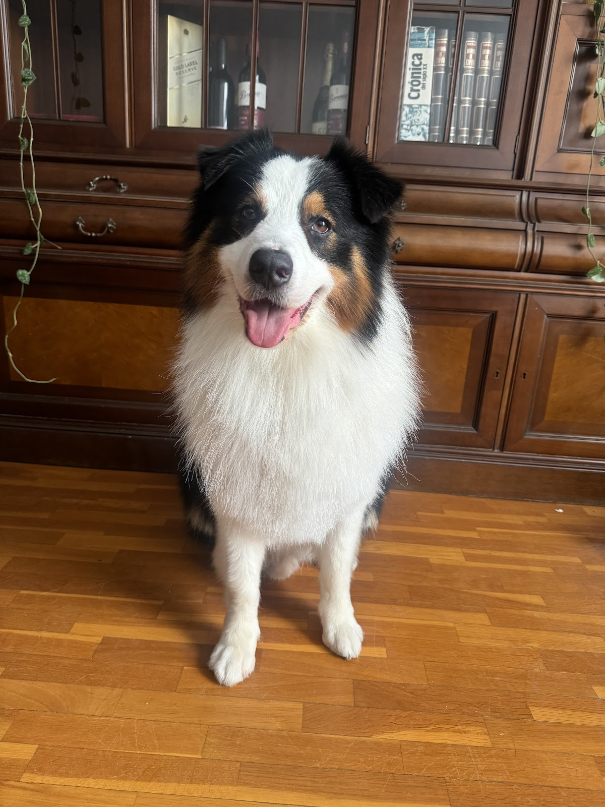

Peluquería canina & felina · Quatre Carreres, Valencia
Sale guapo.
Sale guapo.
Sale feliz.
En Tu Pet tratamos a tu mascota como tratarías tú a un miembro de la familia. 🐾
Mucho mimo, paciencia y mano experta — incluso con los más delicados, mayores o asustadizos.
Pedir cita por WhatsApp
📍 Te respondemos hoy mismo
